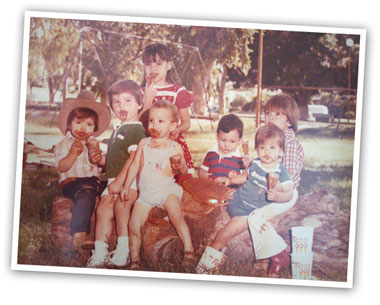

|
Neverías Móviles es una empresa familiar fundada en 1964. Inicialmente el producto se vendía en carritos ambulantes, de donde provino el nombre de la empresa.
Con el tiempo se decidió establecer puntos fijos de venta. A partir de ahí la compañía tuvo un crecimiento sostenido en Sonora y Sinaloa, fabricando nuevos sabores y presentaciones de nieve e introduciendo paletas a su línea de producción. Sus ventas casi en su totalidad, se basaban en la venta de nieve y paletas en expendios exclusivos.
En los años noventa, la empresa incursionó también en la venta de base (mixtura) para hacer helados a otras neverías. Se fabrica también el concentrado para hacer “hielitos”, que es sumamente popular y ha tenido un gran éxito desde su lanzamiento.
La línea de paletas se amplió a decenas de sabores nuevos, siendo de especial éxito las paletas de yogurt.
Actualmente la empresa cuenta con locales Ricco en el Estado de Sonora y Sinaloa, y se tienen planes de expansión a corto plazo.
 |